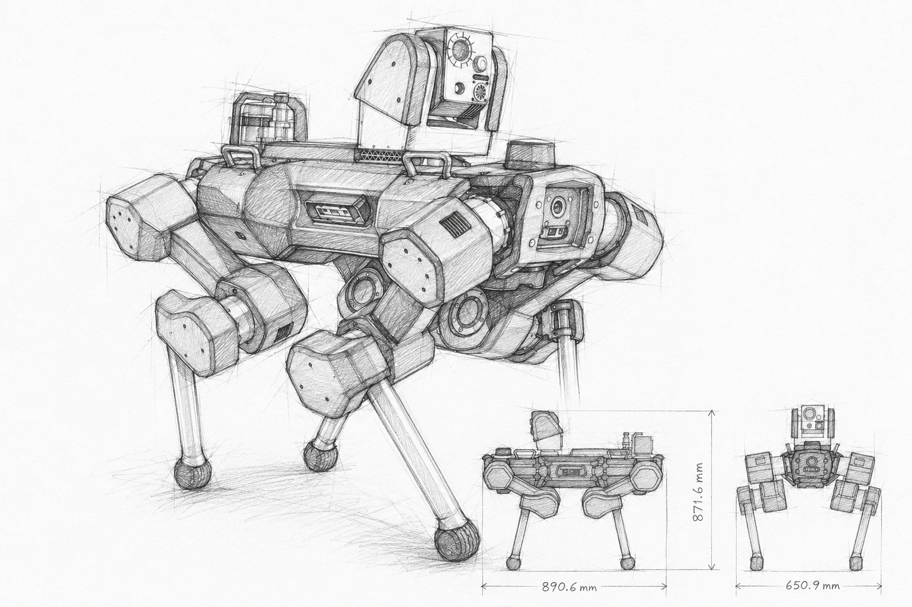
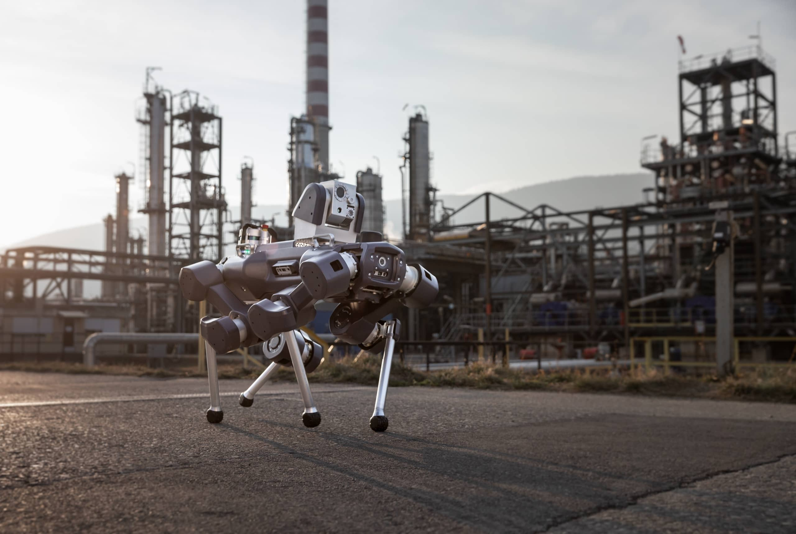

Engineering · 01
ANYmal X
Contributed to the development of ANYmal X across multiple product generations, from early prototypes to the final certified platform. My responsibilities evolved from mechanical engineering to systems engineering, including ownership of the main body and leg assemblies, engineering release, architecture development and requirements engineering.
Field
Robotics
Period
2022–2025
Focus
Mechanical engineering / Systems engineering
Overview
Developing an autonomous inspection robot for hazardous industrial environments.
ANYmal X was developed as an autonomous quadruped robot for inspection in explosion-hazardous industrial environments. Over more than three years, I contributed across multiple product generations—from early functional concepts and prototypes to customer-deployed pre-series systems and the final certified product.
I initially worked as a mechanical engineer, taking responsibility for the development of several key subsystems, including the main body enclosure and leg assemblies with their integrated actuators. Together with another engineer, I was responsible for the engineering release of these assemblies for production.
As the platform matured, my role expanded into systems engineering, supporting system architecture development, requirements engineering, subsystem integration, verification and redesign activities driven by certification and compliance requirements.

Key challenges
Engineering a mobile robot for explosive environments.
The platform had to satisfy demanding mechanical, safety and certification requirements without compromising mobility, maintainability or autonomous operation.
- Gas-tight enclosure design for Ex pxb protection
- Explosion-proof Ex d drive & battery enclosure
- Cable routing and gas-tight feedthrough connections for Ex pxb protection
- Weight reduction while maintaining structural integrity
- Thermal management of electronics and battery systems in a sealed enclosure
- Impact protection for exposed components
- Integration of safety and monitoring devices such as temperature and pressure sensors, emergency stop and safety interlocks
- Industrialization of the platform for production due to certification and compliance requirements
Solution
A certified robotic platform combining mechanical protection, mobility and autonomous inspection.
The final platform combined gas-tight enclosures, explosion-protected drives, integrated sensing and safety systems within a mobile quadruped architecture.
My work included mechanical design, subsystem integration, design verification and coordination across interfaces between mechanics, electronics, software and certification requirements.
The development process required continuous iteration between design, testing and verification to ensure that the platform remained functional, serviceable and compliant throughout industrialization.
Official video
See ANYmal X in action
ANYbotics' official video provides a broader look at the robot, its development and its intended industrial applications.

Reflection
What I Ihave learned at my time working on ANYmal X.
Developing ANYmal X taught me that successful robotics products are built through continuous iteration. Early prototypes rarely solve every problem, but they provide the fastest way to validate assumptions, uncover unexpected issues and improve the design. Small, cross-functional engineering teams are particularly effective during these stages because they can prototype, test and adapt quickly. As the product matures, structured engineering processes become increasingly important to ensure reliability, traceability and certification.
The project also changed how I approach engineering. Working across mechanical design, electronics, software and certification taught me to think beyond individual components and consider the complete system. Understanding interfaces, requirements, verification and failure modes is essential for making informed design decisions, particularly in safety-critical products where small changes can have system-wide consequences.
Finally, I learned that technical expertise alone is not enough. Successful engineering depends on clear communication, well-defined responsibilities and effective collaboration between different disciplines. Being able to adapt technical discussions to different audiences—from design reviews with engineers to conversations with management or certification bodies—was just as important as solving the engineering problems themselves.